Posti
in cui tornerai.
Salva un posto con un tocco. Stops ricorda in silenzio dove sei stato, trasforma i giorni lontano da casa in viaggi e ha già pronte le previsioni per il prossimo. Tu pensa solo all’avventura.
Nessun account. Nessun server nostro. Tutto resta nel tuo iCloud.
Dal 1° dicembre su iPhone, iPad, Mac e Apple Watch
Le app di mappe ti portano lì. Stops conserva i posti.
Le app di mappe sono fatte per navigare, quindi salvare un posto tutto tuo richiede più tocchi del dovuto. Stops è per i posti che trovi lungo la strada: un angolo tranquillo per campeggiare, un panorama che merita una pausa tè, un’escursione da rifare, il negozio che aveva di tutto. Lo vedi, lo salvi, e la prossima volta che passi da quelle parti è lì che ti aspetta.
Salva i posti in cui vorresti tornare.
Il lago tranquillo, il panorama che ti ha fatto accostare, il negozio che aveva di tutto. Un tocco ed è una tappa sulla tua mappa, con una nota per il te del futuro, così la prossima volta che passi di lì sai che c’è.
- Vedi quanto dista ogni tappa e ottieni le indicazioni con un tocco, nella tua app di navigazione preferita
- Salva dove ti trovi da un widget, con Siri o da Apple Watch, senza aprire l’app
- Trova qualsiasi tappa da Spotlight, con Siri o con Intelligenza visiva
Elenchi per organizzarti e da condividere.
Raggruppa le tappe in elenchi per un viaggio on the road, un weekend fuori o un giro gastronomico. Condividi un elenco con chi è in macchina con te, e tutti possono aggiungere posti.
- Gli elenchi condivisi restano sincronizzati tramite iCloud e puoi vedere cosa hanno aggiunto gli altri
Porta dentro posti da blog e altre app.
La panetteria di un blog, il bar che ti ha mandato un amico, un intero elenco di Google Maps o una guida di Mappe. Condividilo con Stops ed è sulla tua mappa. Hai copiato un link? Quando torni, Stops lo nota e ti propone di salvarlo.
- Funziona dal foglio di condivisione di qualsiasi app
- Riconosce link di Mappe e Google Maps, indirizzi e coordinate
- Nome, indirizzo e categoria compilati per te
- Importa guide di Mappe, Google Takeout e file GPX, gratis per tutti (scopri come)
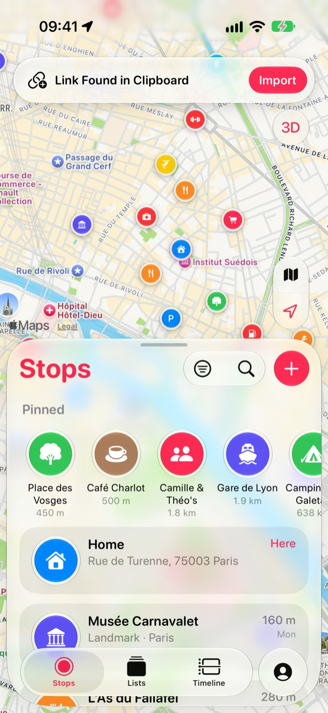
Stops ricorda, così non devi farlo tu.
Attiva la Cronologia una volta ed è l’ultima cosa che devi fare. Giorni, viaggi e paesi si compilano da soli in base a dove vai davvero, senza scrivere niente. Poi, dal divano, i posti che ti sono piaciuti diventano tappe con un tocco.
Dove sei stato, giorno per giorno.
Stops annota in silenzio i posti in cui trascorri del tempo, così puoi ripercorrere qualsiasi giorno di un viaggio. Dove sei stato riguarda solo te: resta sui tuoi dispositivi e nel tuo iCloud, e niente viene mai raccolto o inviato da nessuna parte.
- Ogni giorno come mappa e come elenco di visite
- Il meteo al momento di ogni visita
- Salva come tappa qualsiasi posto in cui sei stato, direttamente dal giorno
- Nessun account, nessun server, nessuna analisi. Nessuno può vedere la tua Cronologia tranne te
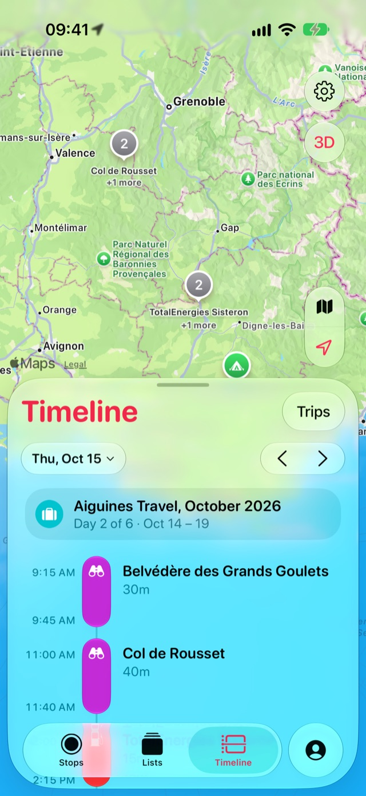
Anni di viaggi, ritrovati nelle tue foto. Pro
Stops può compilare la Cronologia, i viaggi e i paesi a partire dalle foto che hai scattato prima di avere l’app, anche anni fa. E su ogni tappa, le foto scattate lì ti aspettano nella sua scheda.
- Le tue foto restano nella tua libreria. Niente viene copiato, archiviato o caricato
- Vedi cosa è stato trovato prima che venga aggiunto qualcosa
- Apri una tappa per vedere le foto che hai scattato lì, in ogni visita
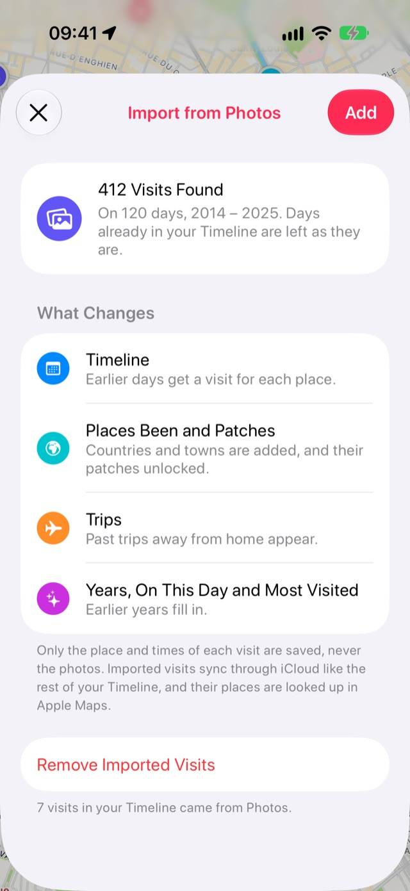
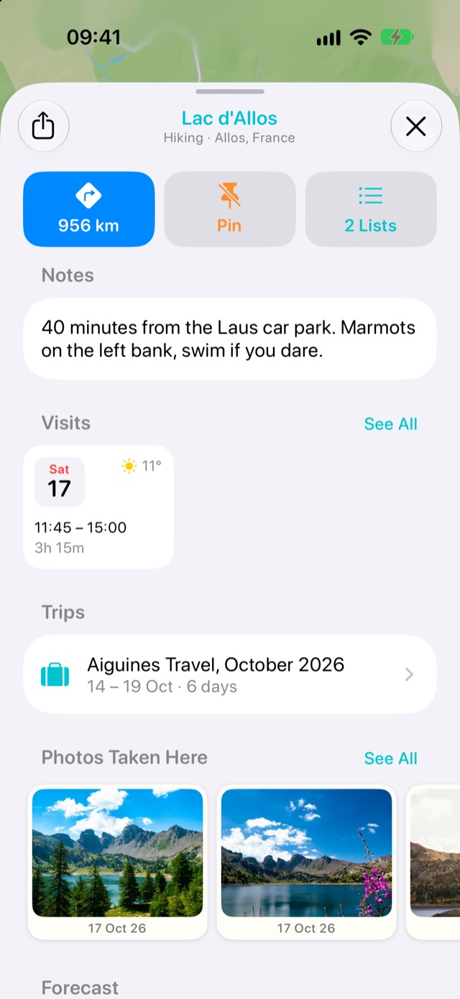
I tuoi viaggi, trovati per te. Pro
Passa qualche notte lontano da casa e Stops trasforma quei giorni in un viaggio, con la sua mappa, le città, i numeri e le foto.
- Una volta a casa, Stops sceglie i posti del viaggio che vale la pena conservare, e ognuno diventa una tappa con un tocco
- Condividi un viaggio come immagine della mappa
- Ogni paese ha il suo diario con le tue città, i viaggi, i posti più visitati e le tappe
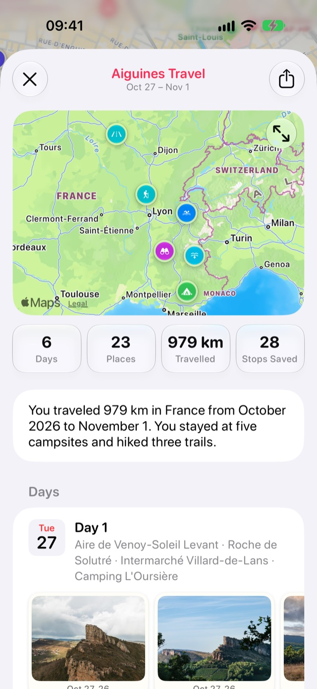
E una toppa per ogni paese.
Entra in un nuovo paese e la sua toppa ricamata è tua. Una piccola ricompensa per essere partito.
Il prossimo viaggio parte dai posti che già ami.
Ogni tappa che hai conservato è una candidata per il weekend. Stops mette le previsioni su ognuna, le ordina in base al meteo e trova quelle lungo il tragitto.
Le previsioni su ogni tappa. Pro
Confrontare le gite di un giorno significava aprire una scheda del browser per ogni posto, o saltare dall’app Meteo alla mappa per trovare il posto e poi di nuovo al meteo. Apri una tappa e il meteo è lì: ora per ora, la settimana a venire, alba e tramonto, così sai quanta luce resta, a che ora puntare la sveglia per l’alba o quando arrivare per la foto al tramonto.
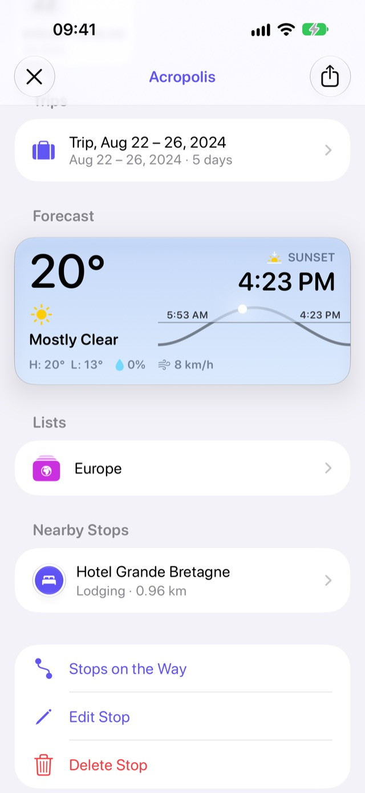
Dove andare questo weekend. Pro
Scegli un giorno e Stops mette in fila le tappe salvate a portata di mano, prima quelle con il meteo migliore, con massima, minima e probabilità di pioggia. Il lago o il belvedere: deciso con uno sguardo.
- Restringi ai tipi di posti che ti vanno
- Città vicine dove non sei ancora stato, suggerite accanto
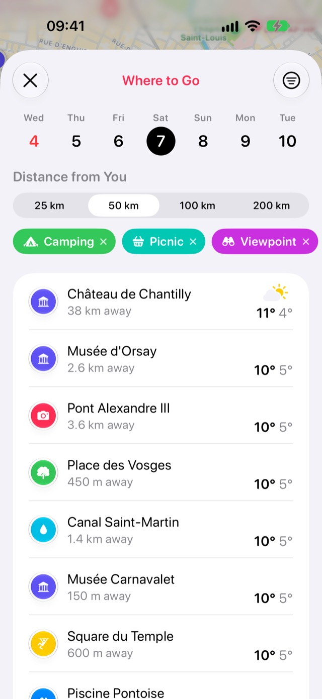
Le tue tappe, lungo il tragitto.
Stai andando da qualche parte? Stops ti mostra i posti salvati lungo il tragitto, nell’ordine in cui li incontrerai, con la distanza di ognuno dalla strada. Spunta quelli che vuoi e ottieni le indicazioni che passano per tutti.

Itinerari, con i percorsi a piedi già calcolati. Pro
Metti le tappe di un elenco nell’ordine in cui le visiterai e appare il tratto a piedi tra l’una e l’altra, con l’intero percorso sulla mappa. Un elenco più lungo si divide in giorni.
- Ogni tappa si spunta da sola quando ci arrivi
- Un itinerario che hai creato continua a funzionare, con o senza Pro
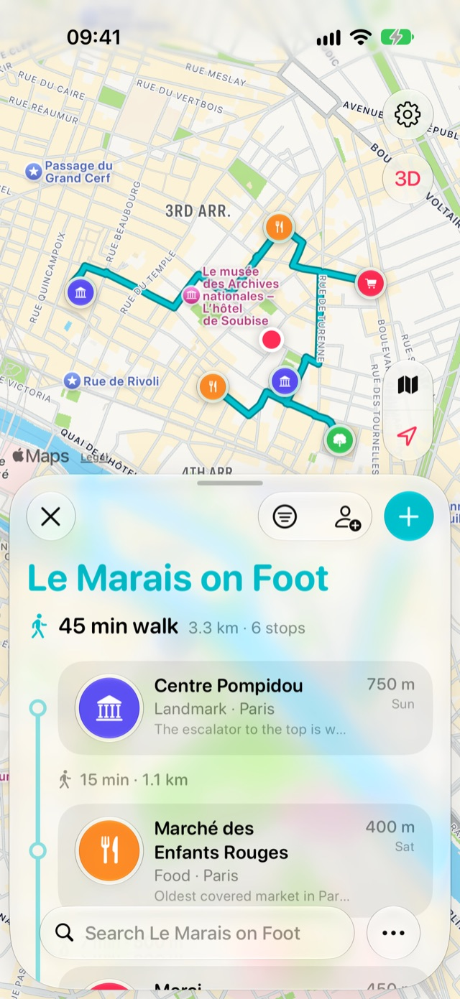
Lì quando ti serve.
Un’unica app, sincronizzata con il tuo iCloud, su ogni schermo che possiedi.
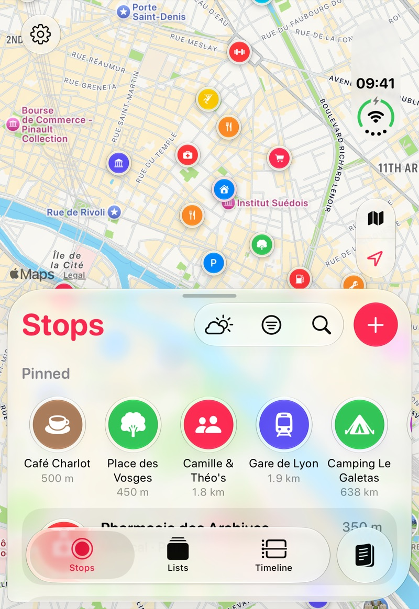
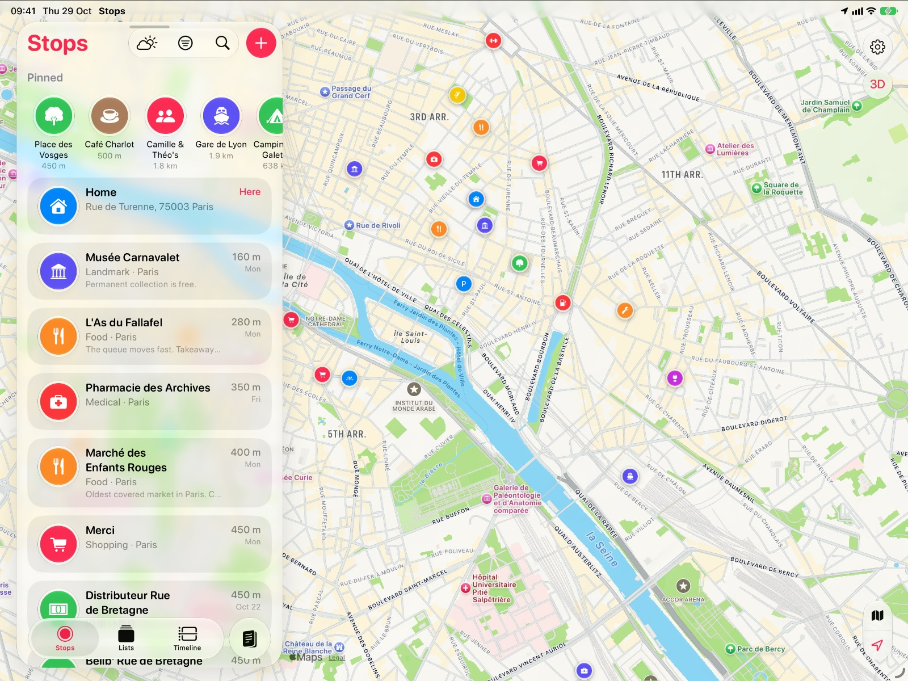
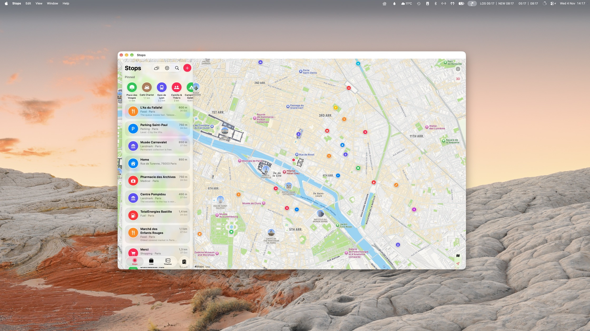
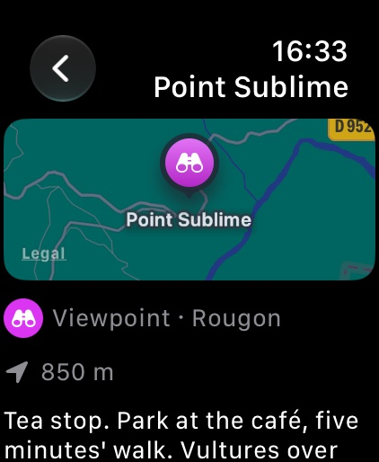
Widget
Le tappe più vicine sulla schermata Home e sulla schermata di blocco, a un tocco dalle indicazioni, e un pulsante per salvare dove ti trovi.
Siri e Comandi Rapidi
“Salva dove mi trovo in Stops” o “Qual è la mia tappa più vicina in Stops?”, senza mani, con entrambe le mani sul volante.
Spotlight e Intelligenza visiva
Trova qualsiasi tappa o elenco da Spotlight, oppure inquadra un posto con la fotocamera per richiamare la sua tappa.
Promemoria all’arrivo
Un piccolo avviso quando sei vicino a una tappa salvata, con la nota che ti eri lasciato. Attivo solo se lo vuoi.
I tuoi dati, a modo tuo
Esporta tutto o un singolo elenco in GPX, KML o CSV quando vuoi. Sempre gratis.
Nella tua lingua
Inglese, tedesco, francese, spagnolo, italiano, portoghese, giapponese, coreano e cinese.
Fatta per iPhone Duo fin dal primo giorno.
Stops è pronta per il nuovo iPhone, chiuso o aperto.
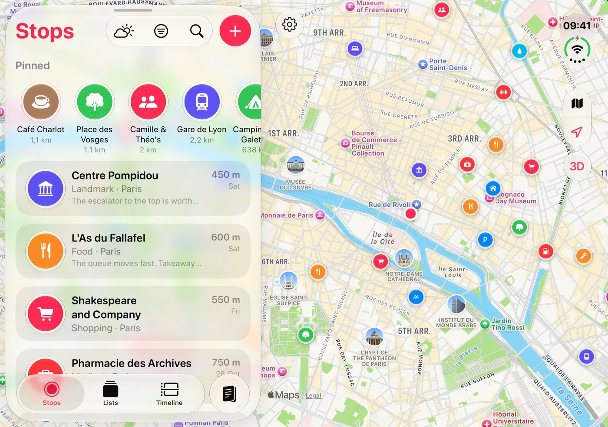
Intelligente, e sempre privata.
Sui dispositivi che supportano Apple Intelligence, Stops racconta i tuoi viaggi, capisce cosa stai cercando e mette in ordine quello che importi. Funziona tutto sul dispositivo, mai su un server, e senza Apple Intelligence tutto il resto funziona esattamente allo stesso modo.
Viaggi che si raccontano da soli
Una volta a casa, ogni viaggio riceve un titolo e un paio di righe che lo descrivono, scritte a partire dalle tue visite, dalle città e dal meteo. Niente è inventato.
Chiedi con parole tue
Cerca “spiagge dove sono stato in Italia” o “quel ristorante di ramen a Tokyo” e trova le tappe e le visite che intendi.
Salva un articolo intero
Condividi da Safari un articolo sui “migliori posti per nuotare in Provenza” e i posti citati arrivano tutti insieme in un nuovo elenco.
Importazioni più ordinate
I posti importati da Google Takeout o da un file GPX ricevono una categoria in base al nome, e i nuovi elenchi un’icona e un colore adatti.
Organizza giorno per giorno
Dividi un itinerario in giorni di tappe vicine, ognuno in un ordine adatto alla giornata: l’escursione al mattino, il belvedere per il tramonto per ultimo.
Siri conosce i tuoi viaggi
“Apri il mio viaggio Lisbona in Stops”, “Quando sono stato l’ultima volta a Roma in Stops?” o “Quanti paesi ho visitato in Stops?”
Gratis per conservare i tuoi posti. Pro per tutto il resto.
Salvataggio, elenchi, la tua mappa e tutta la Cronologia sono gratis, per sempre. Stops Pro aggiunge le funzioni che guardano più indietro nel tempo e aiutano a pianificare.
Gratis
- Salva tappe, elenchi, segnaposti e categorie
- Cronologia e tutto il tuo storico
- Condividi elenchi con altre persone
- Tappe lungo il percorso, ovunque tu vada
- Importa posti da guide di Mappe, Google Takeout e GPX
- Esporta tutto, in qualsiasi momento
- Widget, Apple Watch, Siri e il foglio di condivisione
Stops Pro
- Visite da Foto e da Google Timeline
- Pagine dei viaggi, racconti e mappe da condividere
- Un diario e una toppa per ogni paese
- Le previsioni su ogni tappa e Dove andare
- Il meteo al momento di ogni visita
- Itinerari con percorsi a piedi e piani giornalieri
Prezzi in dollari USA. Prezzi locali sull’App Store.
Dove vai non è affare di nessuno. Nemmeno nostro.
Un’app che sa dove sei stato deve meritarsi la tua fiducia. Per questo Stops non ha server né account. Le tue tappe e visite restano sui tuoi dispositivi e si sincronizzano tramite il tuo iCloud, proprio come Note e Foto. Niente torna a noi: nessuna analisi, nessuna pubblicità, nessun tracciamento. Non potremmo guardare la tua mappa nemmeno volendo.
La tua prossima tappa ti aspetta.
Stops arriva il 1° dicembre su iPhone, iPad, Mac e Apple Watch. Preordinala ora e verrà scaricata automaticamente quel giorno.